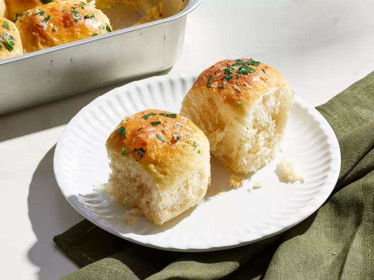

Garlic dinner rolls recipe

Description
These garlic dinner rolls are wonderfully fluffy and buttery with a golden brown
top and light fluffy interior. Garlic flavor is infused throughout.
Ingredients
- 1 cup whole milk
- 1 tablespoon grated garlic, divided
- 7 tablespoons unsalted butter, divided
- 2 large eggs, at room temperature, divided
- 3 3/4 cups all-purpose flour, divided, plus more for work surface
- 1 large egg yolk, at room temperature
- 1 (1/4 ounce) envelope active dry yeast
Steps
- Gather all ingredients.
- Combine milk and 1 teaspoon of the garlic in a small saucepan and cook over medium, stirring occasionally, until just bubbling around the edges, 4 to 5 minutes. Remove from heat and pour into the bowl of a stand mixer fitted with a dough hook attachment. Stir in sugar and 4 tablespoons of the butter; let cool, stirring occasionally, until mixture is between 110 degrees F and 120 degrees F (43 degrees C to 48 degrees C), 5 to 10 minutes. Stir in yeast; let stand until mixture is foamy, about 10 minutes.
- Add salt, egg yolk, 1 egg, and 2 cups of the flour; beat on low speed until combined, about 1 minute. With mixer running on low speed, carefully add remaining 1 3/4 cups flour, 1/2 cup at a time, and beat until dough just comes together, about 1 minute. The dough will be very sticky. Increase speed to medium, and beat until dough pulls away from the sides of the bowl and is smooth and elastic, about 10 minutes.
- Coat a large bowl with cooking spray and transfer dough to the prepared bowl; turn to coat. Cover with plastic wrap and let rise in a warm place until about doubled in size, about 1 hour.
- Meanwhile, heat the remaining 3 tablespoons butter and 2 teaspoons garlic in a small saucepan over medium-low, stirring occasionally, until
butter is melted and garlic is fragrant, about 3 minutes. Transfer 1 1/2 tablespoons of the butter-garlic mixture to a small bowl; set aside. Reserve remaining butter-garlic mixture in saucepan.
- Lightly coat a 9- x 13-inch baking pan with cooking spray. With a clean hand, punch down dough and turn out onto a lightly floured work
surface. Using a sharp knife or bench scraper, divide dough into 20 (1.4 ounces) pieces. Gently form each dough piece into a ball, pinch to close, and dip into butter-garlic mixture in saucepan to coat all sides. Place in prepared baking dish, seam-side down, arranging dough balls in 4 rows of 5. Cover with plastic wrap and let rise at room temperature until about doubled in size and dough springs back slowly when poked, 30 to 45 minutes.
- Whisk together remaining 1 egg and water in a small bowl until combined. Brush tops of rolls with egg mixture.
- Bake in heated to 175 C oven until golden brown, 18 to 20 minutes.
- Stir parsley into reserved butter-garlic mixture in bowl. Immediately brush rolls with butter-garlic mixture. Serve warm.